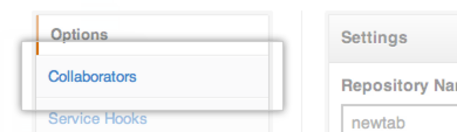
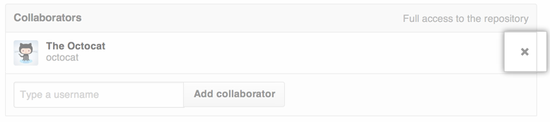

When you remove a collaborator from your project, they lose read/write access to your repository.
Warning: The person you're removing as a collaborator may have forked the repository while they had access to it. Once they're removed as a collaborator, they will retain access to the fork, but they cannot fetch changes to sync with your repository.
- In the upper-right corner of any page, click your profile photo.

- On your profile page, click the Repositories tab, then click the name of your repository.

- In your repository's right sidebar, click Settings.

- In the left sidebar, click Collaborators. 
- Next to the collaborator you want to remove, click the X icon. 